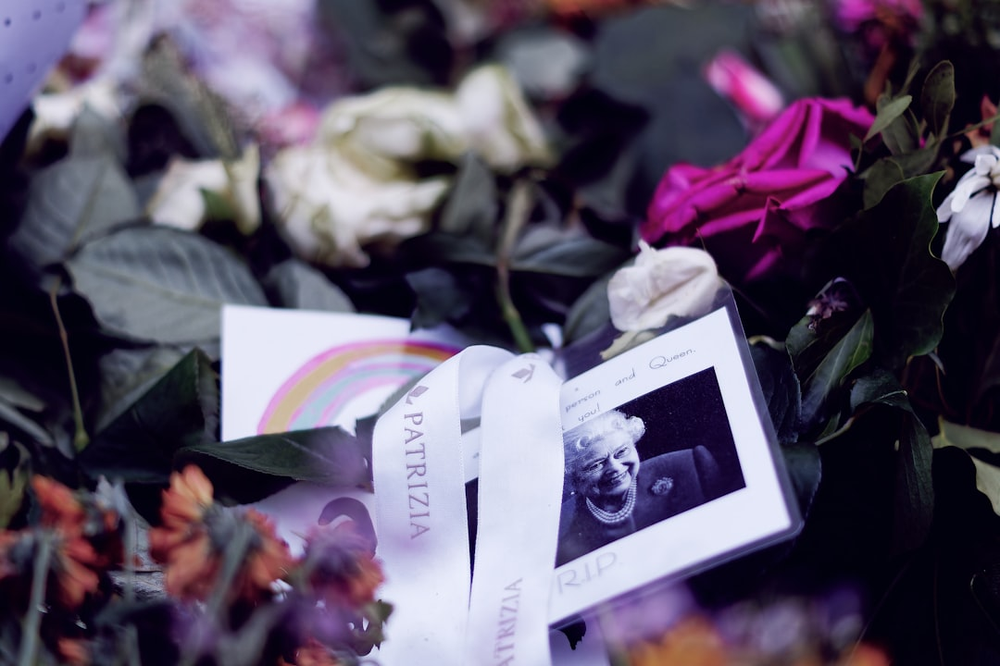

Come Eternia Rivoluziona la Gestione Memoriale per Onoranze Funebri e Servizi Pet

Innovazione digitale per Titolari di Onoranze Funebri, Case Funerarie e Servizi Memoriali Pet: la soluzione Eternia
- Le pratiche tradizionali di ricordo cartaceo mostrano limiti operativi e costi elevati.
- L’assenza di soluzioni digitali impedisce di raccogliere condoglianze in modo moderno e solenne.
- Eternia offre una piattaforma digitale integrata con necrologi AI, QR Code e portali memoriali personalizzati white-label.
Analisi approfondita della notizia e delle implicazioni operative
Il settore delle onoranze funebri, delle case funerarie e dei servizi memoriali pet si trova oggi di fronte a una sfida cruciale: la gestione dei materiali commemorativi e la raccolta di condoglianze con metodi tradizionali risultano sempre più inefficaci. I ricordini cartacei, che un tempo rappresentavano una testimonianza tangibile di memoria, sono soggetti a smarrimenti, usura e un limitato potere comunicativo. I necrologi stampati, inoltre, comportano costi elevati di produzione e distribuzione, limitandone la fruizione e l’aggiornamento tempestivo. La difficoltà di raccogliere condoglianze in modo solenne e organizzato aggrava ulteriormente il problema, penalizzando l’esperienza dei clienti e l’efficacia comunicativa delle agenzie funebri.
Questa situazione impone una riflessione urgente sulle modalità operative, spingendo il settore verso l’adozione di strumenti digitali innovativi capaci di valorizzare il servizio e ampliare la portata commemorativa.
Le conseguenze e i costi di non agire
Continuare con pratiche tradizionali di gestione memoriale senza digitalizzazione genera molteplici svantaggi e costi diretti e indiretti. Innanzitutto, i ricordini cartacei facilmente perduti o deteriorati rischiano di compromettere la relazione di fiducia con i clienti, che vedono sfumare il valore simbolico e affettivo di quel gesto. I necrologi cartacei, oltre a essere economicamente gravosi, limitano la diffusione e l’interattività: non aggiornabili e scarsamente condivisibili, risultano ormai inadeguati nel mondo iperconnesso contemporaneo.
Inoltre, la mancata raccolta sistematica e solenne delle condoglianze rappresenta un forte limite alla cura del cliente, riducendo il coinvolgimento emotivo e potenzialmente la reputazione dell’attività. La complessità operativa nel coordinare strumenti cartacei e digitali disgiunti aumenta i tempi di gestione e il rischio di errori, incidendo negativamente sull’efficienza e sui margini economici.
Come Eternia risolve il problema
Eternia si propone come la soluzione innovativa e completa per superare con efficacia i limiti tradizionali. Attraverso portali memoriali digitali personalizzati d’autore, il SaaS consente la creazione di spazi commemorativi eleganti e interattivi, associati a QR Code stampabili su urne e ricordini per un accesso semplice e moderno.
La mappa GPS integrata guida familiari e amici verso i luoghi della cerimonia o del ricordo, migliorando l’esperienza reale e virtuale. Il Libro dei Ricordi interattivo permette di raccogliere condoglianze, messaggi e memorie in modo solenne e coinvolgente, superando il limite delle firme tradizionali.
La potente intelligenza artificiale di Eternia abilita necrologi creati in 1-click, riducendo i tempi di produzione e garantendo testi professionali e toccanti. Inoltre, grazie alla reperibilità vocale AI H24, i familiari possono ascoltare informazioni e ricordi in ogni momento, migliorando la comunicazione e l’accessibilità.
| Caratteristica | Gestione Tradizionale | Con Eternia |
|---|---|---|
| Ricordini commemorativi | Cartacei, facilmente smarriti | Digitali, QR Code su ricordini e urne |
| Necrologi | Stampati, costosi, limitati | AI 1-click, aggiornabili live |
| Raccolta condoglianze | Manuale, disorganizzata | Libro dei Ricordi interattivo |
| Accessibilità | Limitata agli orari di ufficio | Reperibilità vocale AI H24 |
| Branding | Nessuna personalizzazione | White-Label, personalizzato agenzia |
💡 Ti è stato utile questo approfondimento?
Condividilo con un collega o un amico del settore Titolari di Onoranze Funebri, Case Funerarie e Servizi Memoriali Pet a cui potrebbe interessare!
FAQ - Domande frequenti per professionisti del settore
1. Eternia può integrarsi con i processi già esistenti nella mia agenzia?
Sì, Eternia è progettato per facilitare una transizione graduale e integrare le sue funzionalità con i sistemi e le pratiche esistenti, senza interrompere le attività operative.
2. Come garantisce Eternia la privacy e la sicurezza dei dati commemorativi?
La piattaforma utilizza standard avanzati di sicurezza informatica, crittografia e conformità GDPR per proteggere dati sensibili e assicurare un ambiente digitale affidabile e riservato.
3. È possibile personalizzare i portali memoriali con il brand della mia agenzia?
Assolutamente sì. Eternia offre funzionalità white-label che permettono di personalizzare completamente i portali memoriali con colori, logo e identità visiva dell’agenzia, mantenendo un’immagine professionale coerente.
Inizia Subito
Agency Hub B2B a €690 per 10 Cerimonie White-Label personalizzate col brand dell'agenzia.
Fonti Ufficiali e Risorse Esterne
Scopri l'Intelligenza Artificiale per la tua attività
Ottimizza i processi e aumenta le vendite con le soluzioni B2B di RM Studio.
Scopri Eternia